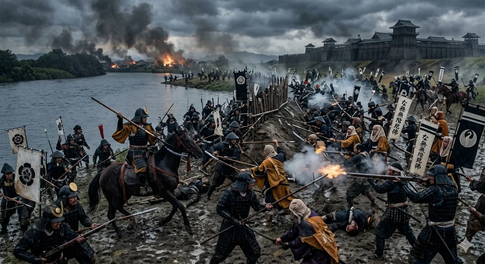
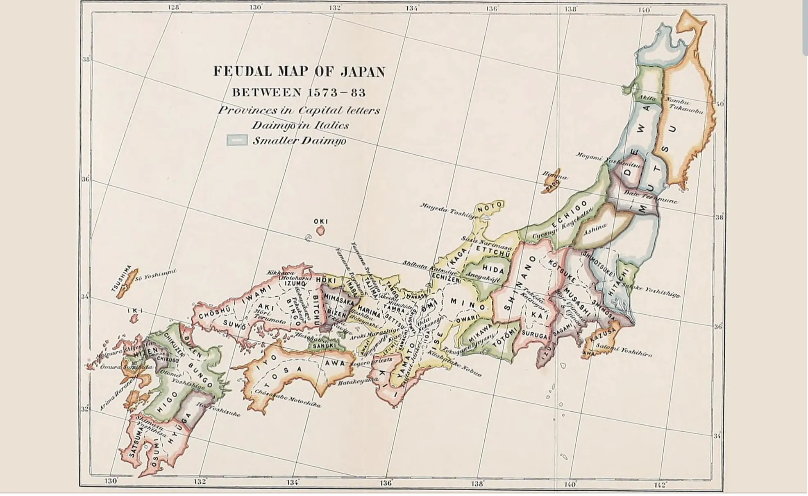
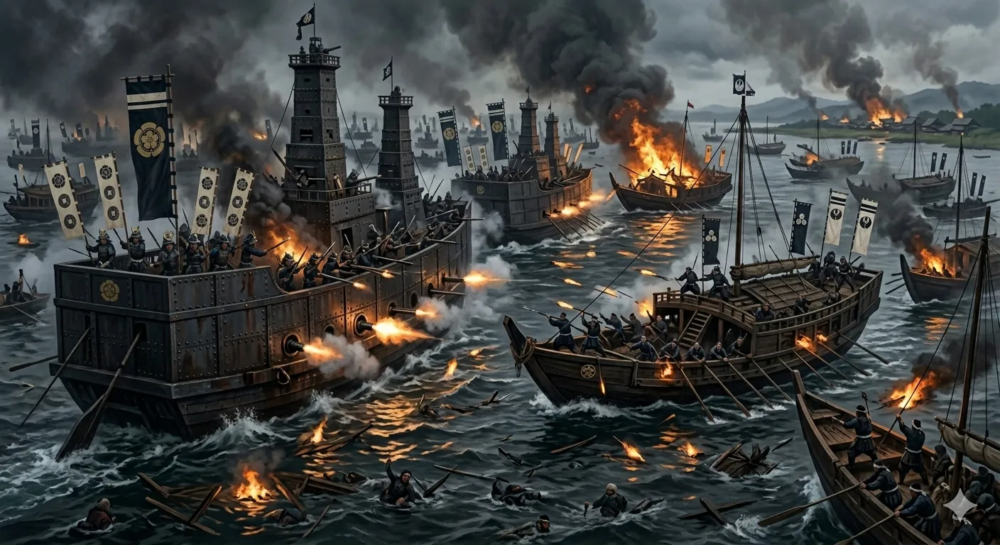
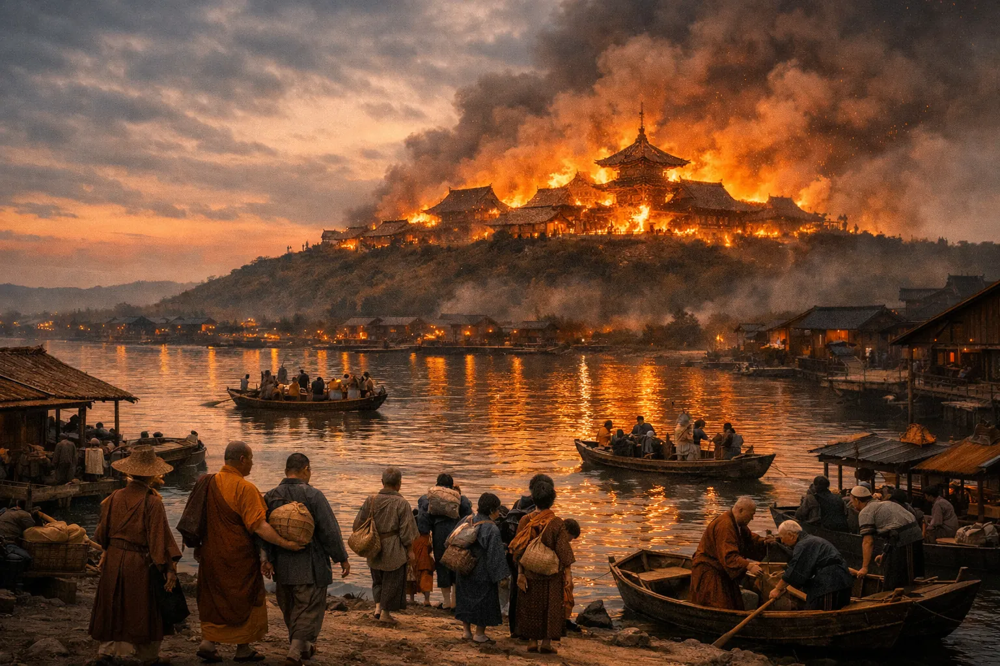

顕如率いる本願寺勢力は信長への抗戦を呼びかけ、野田・福島の戦いにおいて摂津福島の織田軍を奇襲しました。この戦いを経て、石山本願寺を中心とする長期戦が始まりました。
本願寺軍は淀川沿いで織田軍と戦い、石山本願寺内に退きました。
信長はすでに浅井・朝倉・三好との戦いを抱えており、朝廷の仲介による和議を受け入れました。最初の蜂起は1ヶ月に満たない期間で終わりました。

石山本願寺は上町台地北端に築かれた寺院と寺内町の拠点で、現在の大阪城一帯にあったと考えられています。織田信長は1570年から1580年にかけて、これを打破しようと戦い続けました。
1570年から1580年にかけて、織田信長は石山本願寺の打破を試みました。これは浄土真宗本願寺教団の本拠であり、濠や土居に囲まれた寺内町を形成し、門徒や武装した勢力によって守られていました。教団は1532年の山科焼討を受けて1533年に大坂御坊へ寺基を移し、石山本願寺は現在の大阪城一帯にあったと考えられています。織田軍の攻撃によって武力で開城することはなく、最終的には朝廷の仲介による講和によって本願寺が退去しました。退去後に堂舎が焼失し、その後、豊臣秀吉が跡地に大坂城を築きました。
石山本願寺は上町台地北端に築かれた仏教の拠点で、現在の大阪城一帯にあったと考えられています。浄土真宗の総本山として、1570年代にはポルトガル人イエズス会宣教師ルイス・フロイスも、石山本願寺の規模や防御の強固さについて記録を残しています。当時、強固な防御を備えた拠点として知られていました。（英語版：Luís Fróis, First Western Accounts of Japan's Gardens, Cities and Landscapes, ed. Castel‑Branco & Carvalho, 2020.）
信長にとって、畿内の交通と政治に大きな影響力を持つ本願寺勢力が、自らの支配に従わないまま存在することは大きな脅威でした。顕如率いる本願寺勢力は、信長に対する抗戦を呼びかけました。信長は陸上から包囲を進めましたが、本願寺側は周辺の砦や海上輸送を利用して抵抗を続けました。そのため1570年から1580年にかけて、包囲による消耗戦を戦うことになりました。
陸路の防御は堅く、毛利氏の水軍などが海上から兵糧や弾薬を運び入れたからです。1576年の天王寺の戦いでは信長自身が足に鉄砲傷を負い、1578年の第二次木津川口の戦いで織田水軍が優位を確立してから、本願寺は次第に孤立を深めていきました。
総攻撃ではなく、講和によって終わりました。海上の補給路を断たれた本願寺側では兵糧不足が深刻になっていました。1580年、正親町天皇の勅命を受けた朝廷の仲介によって和議が成立し、本願寺が信長と講和しました。顕如は1580年4月に石山本願寺を退去し、長男の教如は8月まで抗戦を続けてから退去しました。教如らが退去した直後、石山本願寺は大火に包まれ、堂舎や寺内町の多くが焼失しました。出火原因については、現在も諸説があります。その後、1583年に豊臣秀吉がこの地で大坂城の築城を開始しました。
大阪城の石垣、隠された堀、そして戦場跡を、エドワード・イフトディ自身が案内します。1人の歴史家。6人のゲスト。1つの探検。
法人向けチームビルディング：実際の歴史的ジレンマをチームで調査・議論・判断するプライベートセッションを、大阪城公園で行います。
法人向けチームビルディングを見る →学校・大学向け歴史フィールドレッスン：先生が設定したテーマや問いをもとに、実際の歴史的景観の中で生徒と探究します。
学校向けフィールドレッスンを見る →顕如率いる本願寺勢力は信長への抗戦を呼びかけ、野田・福島の戦いにおいて摂津福島の織田軍を奇襲しました。この戦いを経て、石山本願寺を中心とする長期戦が始まりました。
本願寺軍は淀川沿いで織田軍と戦い、石山本願寺内に退きました。
信長はすでに浅井・朝倉・三好との戦いを抱えており、朝廷の仲介による和議を受け入れました。最初の蜂起は1ヶ月に満たない期間で終わりました。

この時期、石山本願寺をめぐる戦いは静的な包囲戦ではなく、長島・越前・加賀の一向一揆や、武田・毛利など反信長勢力との連動を含む広域的な戦いへと展開しました。
顕如は武田信玄や毛利氏と密かに同盟を結び、信長を東と西から圧迫しました。
長島（伊勢）・越前・加賀で一向一揆が蜂起し、信長にとっては単なる石山本願寺一箇所ではなく、広範な宗教ネットワークとの戦いでもありました。

信長は本願寺の周囲に十か所の付城を設けるなど、陸上から包囲する態勢を整えました。本願寺勢は包囲を突破して天王寺方面の織田軍を攻撃し、織田方の包囲態勢を大きく揺さぶりました。
戦いは、本願寺勢約一万五千が天王寺方面へ攻め寄せたことから始まりました。本願寺勢は天王寺砦を包囲していた織田軍を攻撃し、明智光秀らが守る砦を危機にさらしました。
1576年5月、信長は京都からわずか約三千の兵を率いて自ら救援に向かい、前線で指揮を執りました。
織田軍の反撃は本願寺勢を押し返し、この戦いで信長自身も足に鉄砲傷を負いました。
しかし、海上では毛利氏側の水軍が織田方の海上封鎖を破り、本願寺への補給を維持しました。
この海上突破で本願寺は食糧と弾薬を補給できました。信長は陸上で包囲を進めながらも、本願寺への海上補給を断ち切ることはできませんでした。この戦いにより、海上補給の遮断が信長側の課題として残りました。
石山本願寺は堅固な防御を備えた拠点でした。毛利氏の水軍が瀬戸内海から物資を運び入れられる限り、本願寺側は持ちこたえることができました。信長は、戦いに勝つには海を制する必要があると考えました。
第一次木津川口の戦い（1576年）では、毛利水軍が織田艦隊を破り、本願寺への海上補給は維持されました。
これに対し、信長は造船師の九鬼嘉隆に大型の安宅船の建造を命じました。九鬼嘉隆が率いる織田水軍は、大型の安宅船を用いて毛利水軍との海戦に臨みました。後世、この船は「鉄甲船」と呼ばれる大型の安宅船として知られていますが、鉄板で覆われた構造や規模については議論があり、火器や火攻めへの対策を施した大型船だったと考えられています。
1578年の再戦は織田水軍の勝利で終わりました。織田水軍は大型船と火砲を活用し、毛利水軍に対して優位を確立し、毛利水軍による大規模な海上補給を困難にし、本願寺の孤立を深めました。
海上からの大規模な補給が難しくなり、本願寺は次第に孤立を深めていきました。

海路が閉ざされ、本願寺側では兵糧不足が深刻になっていきました。
本願寺の坊官らは最後まで抵抗を続けましたが、兵糧や弾薬の補給は次第に困難になっていきました。
1580年4月までに本願寺勢は疲弊し、孤立していました。しかし、まだ武力では開城していませんでした。
正親町天皇の勅命を受けた朝廷の仲介によって和議が成立し、本願寺が信長と講和しました。1580年4月に顕如が石山本願寺を退去し、長男の教如は8月まで抗戦を続けてから退去しました。
教如らが退去した直後、石山本願寺は大火に包まれ、堂舎や寺内町の多くが焼失しました。出火原因については、現在も諸説があります。
石山本願寺は武力で開城されたのではなく、講和によって退去した後に焼失しました。その後、1583年に豊臣秀吉がこの地で大坂城の築城を開始しました。

1580年に焼失した石山本願寺は、歴史から消えたわけではありません。その跡地では1583年、豊臣秀吉が大坂城の築城を開始しました。石山本願寺の寺内町があったこの土地は、やがて豊臣政権の政治的中心となり、さらに徳川幕府によって大きく再築されます。
石山本願寺から豊臣大坂城、そして徳川大坂城へ――なぜこの上町台地の一角が、三つの異なる時代の政治・軍事拠点に選ばれたのでしょうか。僧兵、百姓、将軍が、同じ土地を三つの時代に分けてたどります。
1580年に焼失した石山本願寺は物語から消えたのではありません。その跡地では1583年、豊臣秀吉が大坂城の築城を開始しました。この土地は豊臣から徳川へと姿を変えながら、変わらず歴史の中心にあり続けています。
研究：エドワード・イフトディ（大阪拠点の歴史家・大阪城専属の歴史家）。
この再構成は、同時代のヨーロッパ人の記録、日本の考古学研究、歴史地理学、そして現存する物理的景観に基づいています。